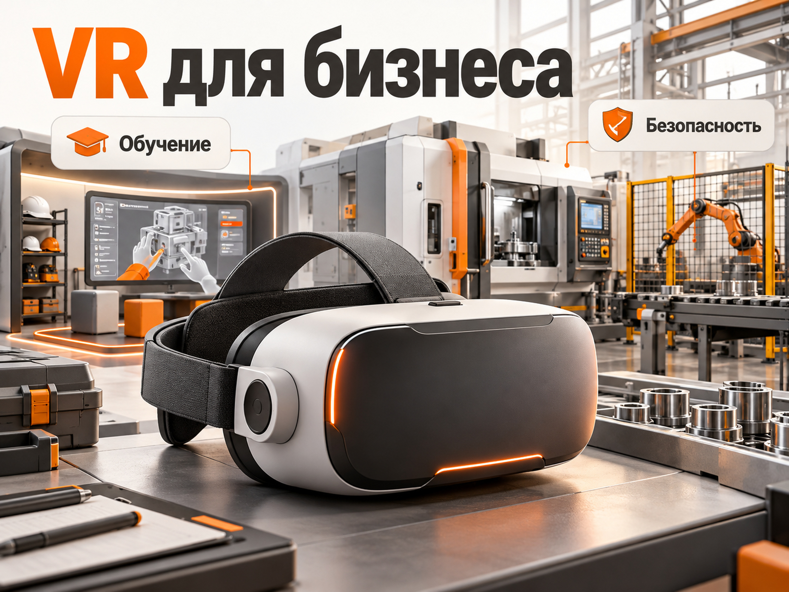
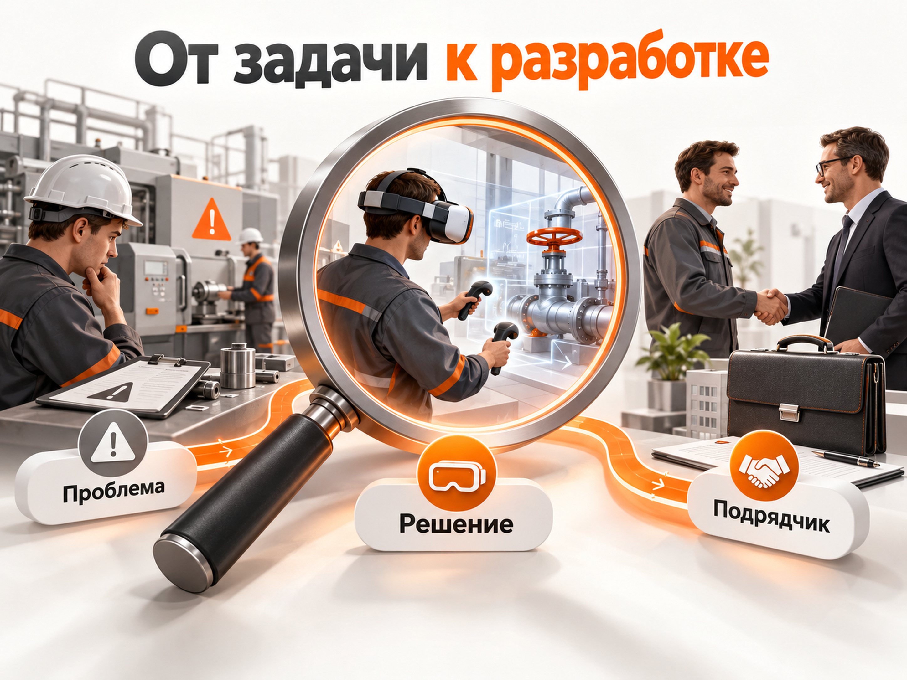
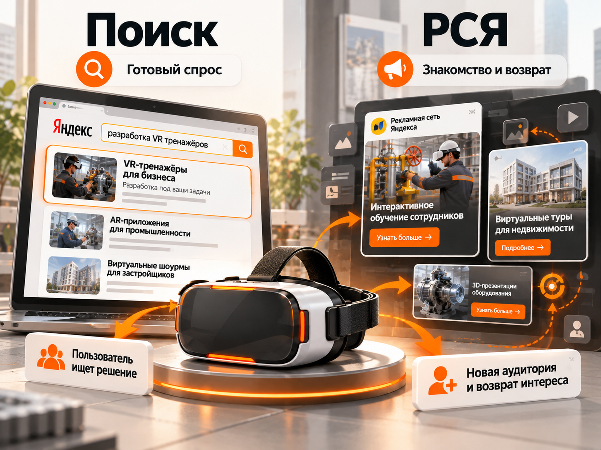
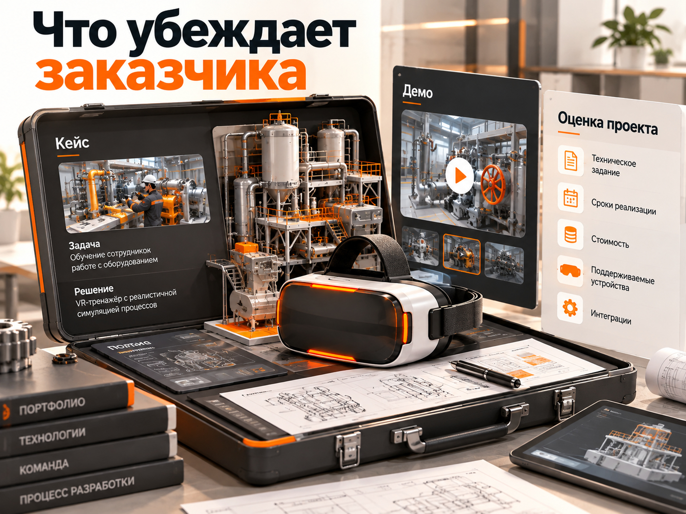
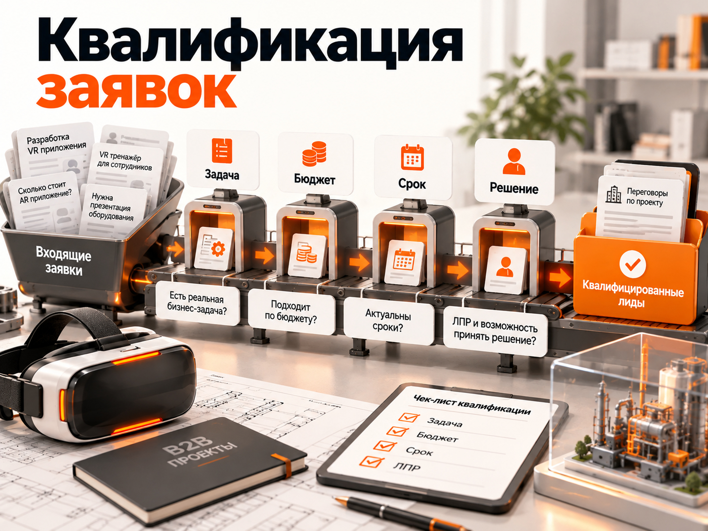
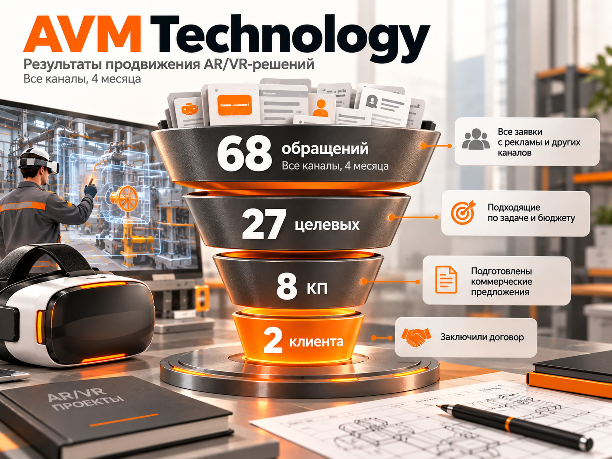
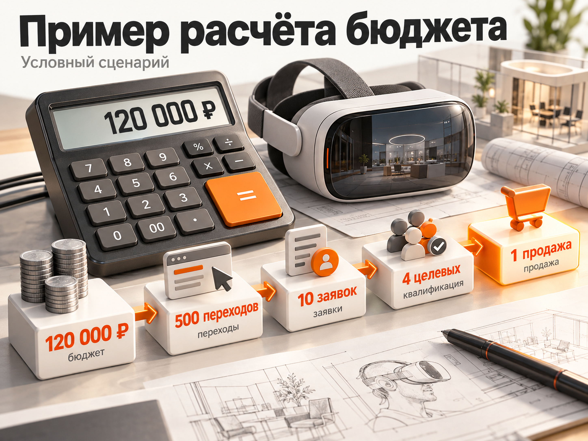

Блог о платном трафике
Продвижение AR/VR-разработки: как привлекать B2B-клиентов в 2026 году
Продвижение компаний, которые разрабатывают решения дополненной и виртуальной реальности, лучше строить вокруг конкретных бизнес-задач. Заказчику обычно нужен не AR или VR сам по себе, а тренажёр для сотрудников, интерактивная демонстрация оборудования, виртуальный шоурум или приложение для презентации продукта.
Основной платный канал, с которого я бы начинал проверку спроса в России, - Яндекс Директ. Но рассчитывать на большой поток заявок только по запросам «разработка VR» и «создание AR приложений» не стоит. Ниша узкая, проекты дорогие, а корпоративные заказчики могут искать решение, даже не используя названия технологий.
Поэтому рекламная стратегия должна сочетать прямые коммерческие запросы, продвижение конкретных решений и работу с качеством обращений. Ниже разберём, как это организовать, что показывают реальные кейсы и как рассчитать бюджет без выдуманных среднерыночных показателей.
Кто покупает AR/VR-разработку для бизнеса
Основные заказчики корпоративных AR/VR-решений - предприятия, образовательные организации, девелоперы, производители сложного оборудования и компании, которым нужны интерактивные презентации.
Здесь важно различать технологию и конечный продукт. Одна студия может разрабатывать VR-тренажёры для промышленности, другая - AR-каталоги для интернет-магазинов. Обе работают с дополненной или виртуальной реальностью, но аудитория, цикл сделки и рекламные предложения будут разными.
| Сегмент | Что заказывают | Какую задачу решают |
|---|---|---|
| Промышленность | VR-тренажёры, симуляторы, AR-инструкции | Обучение сотрудников, отработка опасных операций |
| Образование | Виртуальные лаборатории, обучающие симуляторы | Практическое обучение и моделирование ситуаций |
| Недвижимость | VR-туры, интерактивные шоурумы | Демонстрация объектов до посещения или строительства |
| Производители оборудования | VR-презентации, интерактивные 3D-модели | Демонстрация сложного или крупногабаритного оборудования |
| Ритейл и e-commerce | AR-примерка, AR-каталоги | Визуализация товара в реальном окружении |
| Выставки и мероприятия | Интерактивные стенды, AR/VR-инсталляции | Вовлечение посетителей и презентация бренда |
По данным исследования AppFox за 2026 год, среди 76 изученных AR/VR-проектов 31% были связаны с обучением и тренажёрами. Ещё 25% приходились на AR-каталоги, а 21% - на VR-презентации.
Это распределение конкретной выборки студии, а не всего российского рынка. Тем не менее оно помогает определить направления, для которых существуют реальные коммерческие сценарии.
Я бы начинал продвижение не с обещания «разрабатываем любые AR/VR-решения», а с двух-трёх направлений, в которых у компании уже есть проекты, компетенции и понятный клиентский результат.
Например, промышленному предприятию можно предложить тренажёр для обучения безопасной работе с оборудованием. Девелоперу - виртуальную демонстрацию будущего объекта. Производителю сложной техники - интерактивную презентацию для отдела продаж.
Именно под эти задачи разумно собирать первые рекламные предложения.

Как собрать поисковые запросы для AR/VR-разработки
Семантическое ядро стоит разделить по степени готовности заказчика. Часть аудитории уже ищет разработчика VR-приложения. Другая часть только выбирает способ решения задачи и может вообще не знать, что для неё подходит виртуальная реальность.
Прямые коммерческие запросы
Это наиболее очевидная группа для поисковой рекламы:
- разработка VR приложений на заказ;
- разработка AR приложений;
- создание виртуальной реальности на заказ;
- VR разработка для бизнеса;
- разработка VR тренажёров;
- создание AR приложений для бизнеса;
- разработка VR симуляторов;
- заказать VR презентацию.
Такие запросы логично проверять в первую очередь, поскольку пользователь уже обозначает нужную технологию или услугу.
Но их коммерческий характер ещё не гарантирует качество обращения. Под формулировкой «разработка VR приложения» могут скрываться как крупная промышленная компания, так и студент с небольшим бюджетом.
Запросы под конкретные решения
Здесь человек ищет не технологию в целом, а продукт:
- VR тренажёр для обучения сотрудников;
- виртуальный тренажёр по охране труда;
- симулятор управления спецтехникой;
- интерактивный 3D шоурум;
- виртуальный тур для застройщика;
- AR каталог товаров;
- дополненная реальность для мебели;
- VR симулятор для промышленности.
Эту группу я бы рассматривал как одно из основных направлений продвижения. Она позволяет создавать объявления и посадочные страницы с конкретным предложением.
Запросы по проблеме заказчика
Есть и более широкий спрос:
- обучение персонала на производстве;
- цифровой тренажёр для сотрудников;
- визуализация промышленного оборудования;
- интерактивная презентация недвижимости;
- симулятор технологических процессов.
Такие запросы могут относиться к программному обеспечению другого типа, физическим тренажёрам или обычным презентациям. Поэтому включать их все подряд в рекламную кампанию нельзя.
Сначала нужно проверить выдачу, коммерческий интент и реальные формулировки пользователей.
Важное ограничение: приведённые запросы - кандидаты для проверки, а не подтверждённое семантическое ядро с известной частотностью. Спрос по каждому направлению и региону нужно дополнительно оценивать через Яндекс Вордстат и прогноз бюджета Директа.
Я бы отдельно проверил запросы по VR-тренажёрам, AR-приложениям и виртуальным шоурумам. После этого стало бы понятно, какие направления способны самостоятельно собирать поисковый трафик, а какие требуют других способов привлечения аудитории.
Семантика должна описывать задачи заказчика, а не только аббревиатуры технологий.

Как сформулировать предложение для корпоративного заказчика
В рекламе сложной разработки лучше продавать результат проекта, а не сам факт владения технологией.
Например, предложение «Разрабатываем VR и AR на Unity и Unreal Engine» сообщает о технических возможностях студии, но слабо объясняет пользу заказчику.
Для разных направлений я бы проверял более предметные формулировки.
Для промышленных предприятий
«VR-тренажёры для обучения сотрудников. Разработка под оборудование и производственные процессы».
Для девелоперов
«Виртуальные шоурумы для застройщиков. Демонстрация будущих объектов в VR».
Для производителей товаров
«AR-приложения для демонстрации продукции. Покажите товар в реальном окружении».
Это примеры рекламных гипотез, а не готовые объявления с проверенной конверсией.
Особенно важно показывать специализацию. Если компания уже создавала тренажёры для энергетики, такой опыт может оказаться гораздо убедительнее общего портфолио с десятками несвязанных проектов.
В исследовании AppFox 42% проектов начинались с прототипа или демонстрационной версии. Поэтому разработчикам стоит проверить предложение первого ограниченного этапа: демонстрации, прототипа или технической проработки задачи.
Но обещать бесплатное демо или короткие сроки разработки имеет смысл только тогда, когда компания действительно способна выполнить такие обязательства.
Как запускать Яндекс Директ для разработки AR и VR
Для первоначального теста я бы использовал Единую перфоманс-кампанию с акцентом на поисковую рекламу. Задача первого этапа - не собрать максимальный охват, а понять, какие запросы приводят компании с реальными проектами.
Поисковая реклама
Кампанию стоит строить вокруг направлений бизнеса, а не смешивать все услуги в одну группу объявлений.
Например:
- VR-тренажёры и промышленное обучение;
- разработка AR-приложений;
- VR-презентации и виртуальные шоурумы;
- общие запросы на разработку AR/VR.
При небольшом трафике это могут быть группы внутри компактной структуры кампаний. Не нужно создавать десятки отдельных кампаний, если у каждой будет лишь несколько кликов и конверсий.
Отдельное внимание потребуется автотаргетингу.
В действующих настройках Яндекс Директа автотаргетинг на поиске нельзя полностью отключить. В зависимости от доступного интерфейса можно управлять категориями запросов или задавать ограничения через описание поисковых запросов.
Для AR/VR-разработки это особенно важно: система может подобрать аудиторию, интересующуюся VR-играми, гарнитурами или технологиями виртуальной реальности вообще.
Необходимо регулярно изучать отчёт «Поисковые запросы», проверять категории автотаргетинга и исключать неподходящий трафик.
Минус-фразы
Для компании, которая занимается исключительно корпоративной разработкой, кандидаты на исключение могут выглядеть так:
- скачать бесплатно;
- торрент;
- моды для игр;
- вакансии;
- работа разработчиком;
- курс программирования;
- купить VR очки;
- игры для VR шлема.
Список нужно проверять по реальным запросам. Например, нельзя автоматически исключать слово «обучение», потому что именно обучение сотрудников может быть главным направлением бизнеса.
Реклама в РСЯ
Рекламную сеть Яндекса я бы подключал как отдельное направление тестирования, когда понятны целевые сегменты и есть убедительные материалы для объявлений.
Здесь сложнее работать только с уже сформированным спросом. Аудитория может интересоваться промышленным обучением, цифровизацией предприятий, управлением оборудованием или профессиональными отраслевыми решениями.
Креатив должен объяснять конкретное применение продукта. Просто изображение человека в VR-шлеме с надписью «Разработка VR» вряд ли даст заказчику достаточно причин для обращения.
Можно проверить объявления с реальным примером тренажёра, производственного процесса или интерактивной презентации.
Ретаргетинг имеет смысл использовать для возвращения посетителей, которые изучали конкретные решения, смотрели портфолио или взаимодействовали с формой заявки. Настройки должны учитывать достаточность аудитории и применимые ограничения по данным пользователей.
| Параметр | Поиск Яндекса | РСЯ |
|---|---|---|
| Основная задача | Перехват сформированного спроса | Знакомство с решением и повторный контакт |
| Аудитория | Люди с конкретными поисковыми запросами | Пользователи, отобранные по доступным сигналам таргетинга |
| Предложение | Разработка конкретного продукта | Польза решения для бизнес-задачи |
| Главный риск | Малый спрос, нерелевантные запросы | Широкая аудитория и слабая квалификация |
| Приоритет на старте | Высокий | После оценки поискового спроса и оффера |
Поиск отвечает на сформированный запрос, РСЯ помогает познакомить аудиторию с предложением и вернуть заинтересованных посетителей.

Какую стратегию выбрать
Я бы не начинал автоматически с оплаты за конверсии. В узкой нише качественных обращений может быть настолько мало, что алгоритму не хватит данных для стабильной оптимизации.
У Яндекса есть рекомендации по количеству конверсий для обучения стратегии. В документации отдельно отмечается необходимость достаточного числа достижений цели, а также периода обучения не менее одной-двух недель.
При малом количестве заявок разумнее сначала собрать статистику по трафику и обращениям, используя подходящую стратегию с оплатой за клики и контролем расходов.
Переходить к более глубокой оптимизации на основе квалифицированных обращений стоит тогда, когда данные действительно позволяют обучать алгоритм.
Не нужно назначать отправку любой формы единственным критерием успеха, если большая часть таких заявок не имеет отношения к корпоративной разработке.
Какой сайт нужен компании по разработке AR/VR
Посадочная страница должна показывать заказчику, что именно разработчик способен сделать для его бизнеса.
Я бы не направлял весь рекламный трафик на главную страницу с общим предложением «Разработка IT-решений под ключ».
Предпочтительнее подготовить отдельные страницы под основные направления. Например, страницу VR-тренажёров для промышленности или AR-решений для торговли.
На такой странице должны быть:
- Конкретное предложение. Что компания разрабатывает, для кого и какие задачи решает.
- Примеры проектов. Не просто изображения, а описание задачи, сценария и выполненной работы.
- Демонстрация продукта. Видео, интерактивная модель или запись работы приложения.
- Технические возможности. Поддерживаемые устройства, интеграции, особенности разработки.
- Понятный процесс. Как проходит обследование задачи, подготовка прототипа, разработка и тестирование.
- Принцип формирования стоимости. Какие факторы влияют на цену и что нужно для предварительного расчёта.
- Первый шаг. Возможность обсудить проект, получить консультацию или запросить оценку.
Например, для VR-тренажёра полезно показать виртуальное оборудование, действия обучающегося, условия успешного прохождения и формат отчётности.
Для AR-каталога лучше демонстрировать взаимодействие с объектом в реальном окружении, совместимость с устройствами и пользовательский сценарий.
У человека должна быть возможность оценить проект до разговора с менеджером.

Отдельно подчеркну: качественное портфолио здесь важнее абстрактных заявлений о профессионализме. Если компания специализируется на дорогой корпоративной разработке, кейсы должны помогать заказчику понять масштаб и сложность выполненной работы.
Как квалифицировать лиды и оценивать эффективность рекламы
В AR/VR-разработке обычная стоимость заявки мало говорит об эффективности продвижения.
Одна заявка может прийти от крупного промышленного предприятия, которому требуется система обучения для сотен сотрудников. Другая - от частного лица, желающего заказать небольшой развлекательный проект.
Формально обе конверсии одинаковые. Для бизнеса их ценность совершенно разная.
Поэтому необходимо заранее определить критерии квалифицированного лида.
Я бы учитывал:
- тип заказчика и отрасль;
- конкретную бизнес-задачу;
- предполагаемый масштаб разработки;
- наличие или возможность согласования бюджета;
- сроки реализации;
- роль обратившегося в принятии решения.
Не обязательно делать все поля обязательными в первой форме. Избыточно сложная анкета может снизить число обращений. Часть информации удобнее получать во время первичной консультации.
Какие статусы фиксировать в CRM
Для начала достаточно нескольких понятных этапов:
- Новое обращение.
- Контакт установлен.
- Квалифицированный лид.
- Проведено обсуждение проекта.
- Отправлено коммерческое предложение.
- Сделка выиграна или проиграна.
Важно фиксировать причины отказов. Например, недостаточный бюджет, отсутствие задачи на разработку, неподходящий срок или выбор конкурента.
Именно этот этап отделяет интерес к технологии от реальной возможности заключить договор.

Как связать рекламу и продажи
Минимальная схема аналитики включает Яндекс Метрику, корректную разметку рекламных переходов и CRM.
В Метрике стоит отслеживать отправки форм, обращения через контакты, заявки на обсуждение проекта и другие значимые действия.
Если компания использует телефонию, потребуется корректный учёт источников звонков.
Для более глубокой аналитики можно передавать в Метрику офлайн-конверсии из CRM, включая дальнейшие этапы работы с клиентом. Такая возможность предусмотрена Яндексом, но требует корректной идентификации и сопоставления данных.
Отчёт должен показывать не только количество лидов, но и число квалифицированных обращений, коммерческих предложений и заключённых договоров.
В дорогом B2B необходимо учитывать задержку между заявкой и продажей. Если клиент пришёл в октябре, а договор подписан в декабре, оценивать окупаемость только по продажам октября будет неправильно.
Что показывают реальные кейсы продвижения AR/VR-компаний
Подробных открытых российских кейсов с актуальными рекламными бюджетами, стоимостью квалифицированного лида и завершёнными продажами в этой нише немного.
Тем не менее опубликованные примеры позволяют понять, как организовывалось продвижение и какие проблемы возникали.
Кейс AVM Technology: заявки на VR-разработку
В мае 2025 года на Хабре был опубликован кейс продвижения компании AVM Technology из Нижнего Новгорода. Описанные работы начались в 2024 году, поэтому использовать результат как норматив для 2026 года нельзя.
Компания занималась AR/VR-решениями для бизнеса, включая корпоративное обучение и тренажёры.
В ходе продвижения были выделены наиболее перспективные направления. Отдельное внимание уделили разработке тренажёров для обучения управлению БПЛА.
По опубликованным данным:
- за четыре месяца Яндекс Директ принёс 48 заявок;
- примерно треть обращений из Директа оценивалась как тёплая;
- всего по совокупности маркетинговых каналов было получено 68 обращений;
- 27 обращений признали целевыми;
- по 8 обращениям подготовили коммерческие предложения;
- 2 обращения завершились привлечением клиентов.
Последние четыре показателя относятся к совокупному результату маркетинга, а не только к Яндекс Директу.
В кейсе нет достаточных данных о рекламном бюджете и расходах на привлечение каждой категории лидов. Поэтому достоверно вычислить CPL, стоимость квалифицированного обращения или клиента невозможно.
Наиболее полезный вывод здесь другой: компания получила отклик после выделения конкретного продукта и его продвижения под реальные задачи заказчиков.

Более старый кейс разработки виртуальной реальности
На Workspace опубликован кейс продвижения студии Magic Quick. Он относится к периоду до февраля 2022 года.
Авторы сообщали о стоимости заявки около 1500 ₽ при работе с проектами, средний чек которых составлял 700 000 ₽. Использовались Яндекс Директ и Google Ads.
При этом сначала приходило много небольших заказов. После изменения рекламных предложений и обозначения минимального бюджета разработки удалось точнее отбирать нужную аудиторию.
Сейчас переносить показатель 1500 ₽ на российский рынок 2026 года некорректно. Изменились условия рекламы, доступность каналов и конкуренция.
Но сам подход к квалификации через рекламное предложение остаётся полезным: разработчик может заранее обозначить уровень и специализацию проектов, чтобы сократить количество заведомо неподходящих обращений.
Сколько стоит разработка AR/VR и почему это важно для рекламы
Стоимость самого проекта определяет, сколько компания потенциально может потратить на поиск клиента.
По исследованию AppFox за 2026 год медианная стоимость простого AR-проекта в изученной выборке составила 1,8 млн ₽, VR-презентации или интерактивного шоурума - 4,2 млн ₽, а VR-тренажёра - 6,5 млн ₽.
Эти цифры относятся к конкретной выборке из 76 проектов, а не к средней цене на всём российском рынке. Кроме того, исследование подготовлено участником отрасли на основе собственных материалов.
У каждой студии будут свои цены, себестоимость, прибыльность и сроки разработки.
Для маркетинга важнее не средний чек сам по себе, а маржинальная прибыль, которую приносит проект.
Если разработка стоит несколько миллионов рублей, но большую часть суммы составляют зарплаты специалистов, подрядчики, лицензии, оборудование и другие расходы, рекламный бюджет необходимо оценивать по оставшейся марже.
Как рассчитать рекламный бюджет и стоимость заявок
Универсального CPL для AR/VR-разработки нет. Его нельзя достоверно определить по двум опубликованным рекламным кейсам.
Поэтому для предварительного планирования я бы использовал два расчёта: сначала оценил бы стоимость доступного поискового трафика, затем проверил, какую цену клиента позволяет экономика самой студии.
Пример расчётной модели
Возьмём условную компанию, которая разрабатывает корпоративные VR-решения.
Предположим, в предварительном прогнозе используются такие параметры:
| Показатель | Расчётное значение |
|---|---|
| Рекламный бюджет | 120 000 ₽ |
| Средняя стоимость клика | 240 ₽ |
| Количество переходов | 500 |
| Конверсия сайта в заявку | 2% |
| Количество заявок | 10 |
| Доля квалифицированных лидов | 40% |
| Квалифицированные лиды | 4 |
| Конверсия квалифицированного лида в продажу | 25% |
| Расчётное количество продаж | 1 |
Все значения в таблице - условные допущения для демонстрации расчёта, а не статистика AR/VR-рынка.
Получаем:
Стоимость обращения (CPL)
120 000 / 10 = 12 000 ₽.
Стоимость квалифицированного лида
120 000 / 4 = 30 000 ₽.
Стоимость привлечения клиента по рекламным расходам
120 000 / 1 = 120 000 ₽.
При таких вводных один привлечённый клиент условно обходится в 120 000 ₽ рекламных расходов.

Но это ещё не полная стоимость привлечения: отдельно нужно учитывать оплату специалиста, работу отдела продаж и другие затраты.
И здесь есть существенное ограничение. В очень узком сегменте можно вообще не получить 500 подходящих поисковых переходов за месяц, даже при достаточном бюджете.
Поэтому цифра 120 000 ₽ не является рекомендуемым минимальным бюджетом. Сначала необходимо проверить доступный объём трафика по реальной семантике.
Кроме того, одна ожидаемая продажа в математической модели не означает гарантированный договор. При небольшом количестве лидов фактический результат может сильно отличаться от расчётного, а закрытие сделки может занять несколько месяцев.
Как определить допустимую стоимость клиента
Допустим, компания заключает договор на разработку стоимостью 3 млн ₽.
После покрытия прямых расходов на проект у неё остаётся 30% маржинального дохода до затрат на привлечение:
3 000 000 × 30% = 900 000 ₽.
Предположим, бизнес готов направить на весь процесс привлечения одного клиента не больше 20% этой суммы:
900 000 × 20% = 180 000 ₽.
Получается, предельные совокупные затраты на привлечение одного клиента по выбранной модели составляют 180 000 ₽.
Если на рекламный трафик потрачено 120 000 ₽, а на сопровождение рекламы ещё 30 000 ₽, суммарные затраты достигают 150 000 ₽. На остальные расходы по привлечению и продаже остаётся 30 000 ₽.
Это не универсальная норма. В реальном бизнесе допустимую сумму определяют исходя из маржи, загрузки команды, повторных контрактов и финансового плана.
Как получить прогноз до запуска
Я бы действовал в следующем порядке.
Сначала собирается семантика по направлениям разработки и оценивается доступный поисковый спрос.
Затем используется инструмент «Прогноз бюджета» в Яндекс Директе. Он помогает оценить возможный объём поисковых переходов и расходы, но не прогнозирует реальные заявки и продажи.
Следующий шаг - построить собственную модель конверсий. Если у студии уже есть статистика сайта или CRM, лучше использовать её вместо отвлечённых предположений.
После этого необходимо сравнить расчётную стоимость клиента с допустимыми расходами на привлечение.
Подробно сам принцип расчёта разобран в моей статье «Прогноз бюджета Яндекс Директа».
Отдельно рекомендую учитывать стоимость привлечения клиента (CAC), поскольку дешёвые заявки далеко не всегда означают выгодные продажи.
Как продвигать AR/VR-компанию, если поискового спроса мало
Если по прямым коммерческим запросам недостаточно трафика, я бы не пытался искусственно расширять аудиторию за счёт всех пользователей, интересующихся виртуальной реальностью.
В такой ситуации целесообразно сочетать несколько направлений работы.
Первое - усиливать предложения под конкретные отрасли. Например, вместо общей рекламы VR-разработки продвигать тренажёры для промышленного обучения или виртуальные презентации производственного оборудования.
Второе - развивать поисковую видимость сайта. Полезными будут отдельные страницы решений, подробные кейсы, демонстрации продуктов и статьи, отвечающие на вопросы потенциальных заказчиков.
Третье - работать с уже заинтересованными контактами. Возвращаться к компаниям после консультаций, предлагать подходящие материалы и сохранять историю взаимодействий в CRM.
Четвёртое - использовать отраслевые партнёрства. Например, сотрудничество с интеграторами систем корпоративного обучения, поставщиками промышленного оборудования и организаторами профильных мероприятий. Такой канал нужно развивать отдельно от платной рекламы.
Не стоит ждать, что широкий охват автоматически превратится в качественные заявки. Для дорогостоящей B2B-разработки несколько предметных переговоров могут быть ценнее большого числа случайных обращений.
Основные ошибки в рекламе разработки AR и VR
Продвигать все услуги одним объявлением
У заказчиков VR-тренажёров, AR-каталогов и виртуальных шоурумов разные потребности. Универсальное объявление обычно не отвечает точно ни на одну из них.
Смешивать корпоративную разработку и потребительский спрос
Запросы про игры, гарнитуры виртуальной реальности и бесплатные приложения могут давать трафик, но не обязательно приводить заказчиков разработки.
Не показывать реальные работы
Для сложного программного продукта демонстрация имеет большую ценность. Если посетитель не может увидеть, что компания уже создала, ему труднее оценить предложение.
Скрывать масштаб проектов
Если компания работает только с крупными корпоративными заказами, это стоит объяснять. Иначе отдел продаж будет постоянно обрабатывать небольшие запросы, не соответствующие бизнес-модели.
Оценивать рекламу только по CPL
Дешёвый лид не является хорошим, если у него нет задачи, бюджета и возможности заключить договор.
Делать выводы слишком рано
В узком B2B одна неделя рекламы может не дать достаточного количества данных. Оценивать эффективность нужно с учётом объёма трафика, качества заявок и длительности сделки.
Пошаговый план запуска рекламы для AR/VR-разработчика
Я бы организовал запуск следующим образом.
- Определить приоритетные услуги. Выбрать направления, по которым есть реальные компетенции, портфолио и возможность выполнить заказ.
- Проверить поисковый спрос. Собрать запросы по разработке, готовым решениям и проблемам заказчиков. Разделить коммерческий и информационный интент.
- Подготовить посадочные страницы. Показать продукт, его применение, реальные кейсы и понятный следующий шаг.
- Рассчитать экономику. Определить допустимую стоимость клиента и предварительный бюджет на основе спроса.
- Запустить поисковую рекламу. Проверять запросы, автотаргетинг и качество первых обращений. Не дробить кампании без необходимости.
- Связать рекламу с CRM. Отслеживать квалифицированные лиды, переговоры, коммерческие предложения и реальные договоры.
- Масштабировать подтверждённые направления. Переносить бюджет на те продукты и аудитории, которые показывают коммерческий результат, а не просто высокую кликабельность.
Для такой ниши я бы считал успешным тестом не определённое количество заявок само по себе, а получение данных, позволяющих принимать следующие решения: какие услуги востребованы, сколько стоит контакт с подходящей компанией и насколько такие обращения способны превращаться в договоры.
Итог: стоит ли продвигать AR/VR-разработку через Яндекс Директ
Яндекс Директ подходит для привлечения заказчиков разработки дополненной и виртуальной реальности, но ожидания нужно строить исходя из ограниченного и неоднородного спроса.
Лучший стартовый подход - продвигать конкретные B2B-решения, отдельно проверять коммерческую семантику, демонстрировать реальные проекты и оценивать результат по квалифицированным обращениям и продажам.
Публичных данных за 2026 год недостаточно, чтобы назвать объективную среднюю стоимость заявки в этой нише. Поэтому рекламный прогноз должен опираться на фактическую ёмкость поискового спроса, тестовые показатели и экономику конкретной компании.
Я занимаюсь настройкой и ведением Яндекс Директа для бизнеса, включая сложные B2B-направления. Стоимость услуг - от 30 000 ₽ в месяц без учёта рекламного бюджета. Если вам необходимо проверить спрос на AR/VR-разработку и оценить возможности платного привлечения клиентов, можно обсудить проект.